Our Activities at a Glance
20Events Held
695Volunteer Places Filled
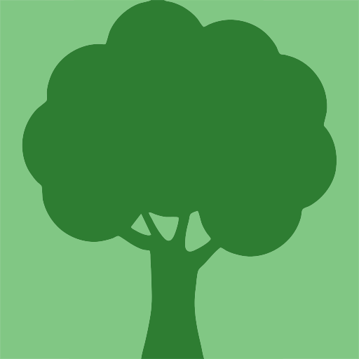
456Trees Planted at Events1,980 kgWaste Collected
Browse by Category
Tree Planting Days
Our biggest events. Volunteers dig, plant and stake indigenous and fruit trees in parks, schools, riverbanks and along roads.

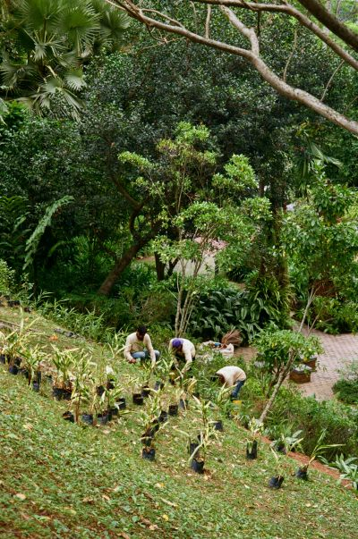
Sandton Park Planting Day
Volunteers dug, planted and staked 120 indigenous saplings along the eastern edge of the park, including Karee and Wild Peach.
42 volunteers | 120 trees planted

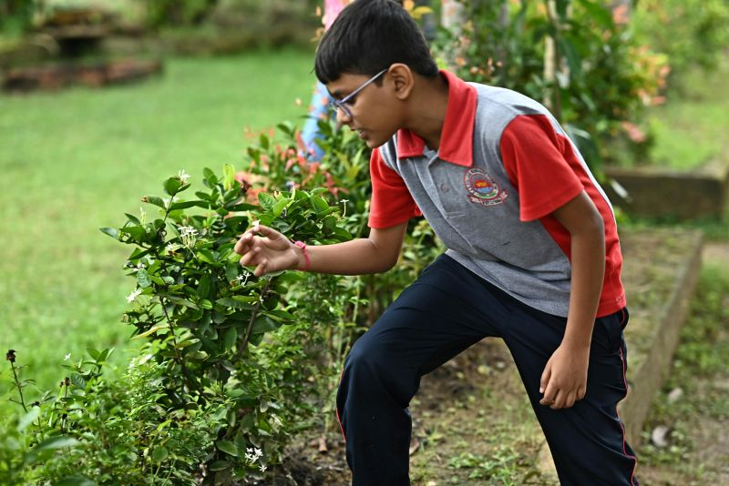
School Greening Day
Teachers, learners and volunteers planted shade trees around the school grounds. Every class named its own tree and promised to look after it.
35 volunteers | 80 trees planted

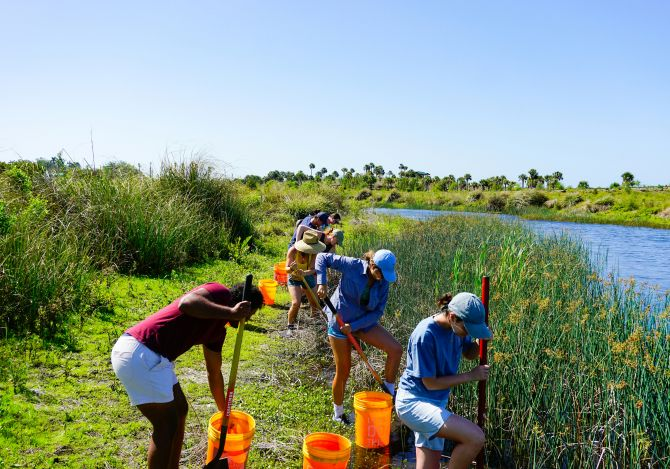
Riverbank Restoration Day
Water Berry and Cape Ash saplings were planted along the riverbank to hold the soil together and shade the water.
58 volunteers | 150 trees planted

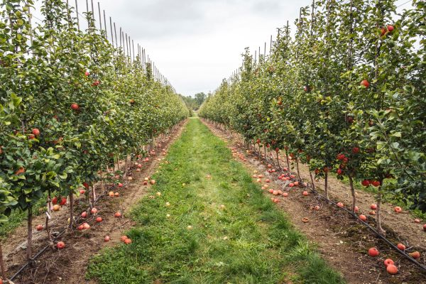
Community Orchard Planting
Peach, apricot and apple trees were planted in the community garden so neighbours can share the harvest in a few years.
28 volunteers | 45 fruit trees planted

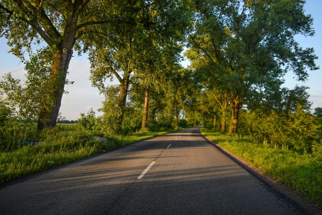
Roadside Greening
Volunteers planted young street trees and fitted tree guards to protect them from traffic and lawn mowers.
31 volunteers | 60 trees planted
Clean-ups and Restoration
Before new trees can grow, the land needs care. These events remove litter and invasive plants from rivers, parks and beaches.

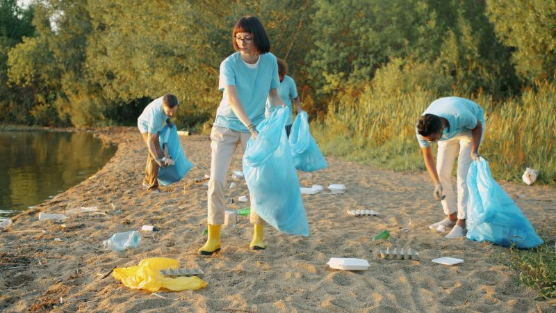
Riverside Clean-up
Bags, bottles and plastic were pulled from the riverbank and sorted for recycling on the spot.
64 volunteers | 380 kg of waste collected

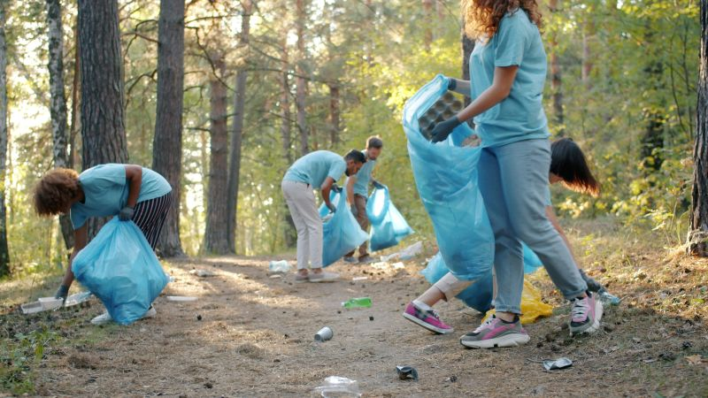
Park Litter Pick
A morning litter pick made the park safe for children again. Bins were checked and two broken ones were reported to the council.
39 volunteers | 210 kg of waste collected

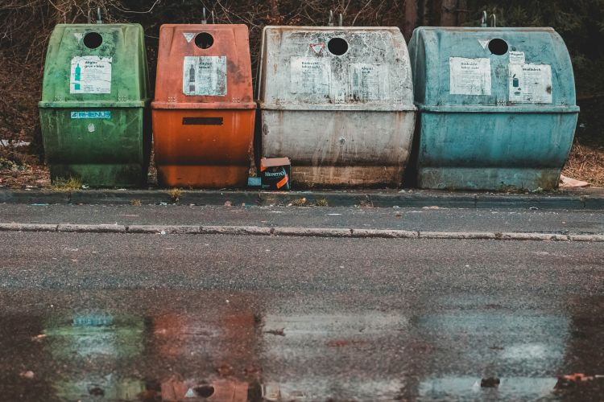
Recycling Drop-off Day
Neighbours brought paper, glass, plastic and cans to our office, where volunteers sorted everything into four colour-coded bins.
22 volunteers | 850 kg of recyclables sorted

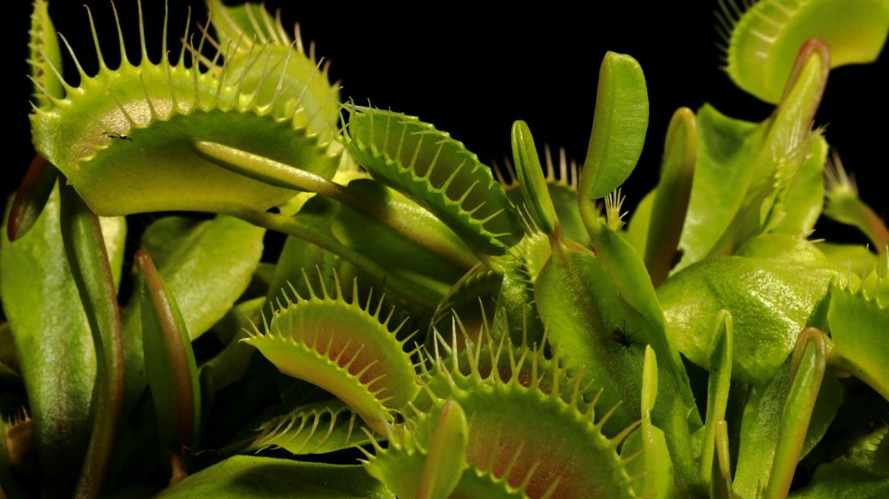
Alien Plant Removal Morning
Invasive plants were pulled out by hand so that indigenous trees and grasses have room to grow back.
27 volunteers | 1.5 hectares cleared

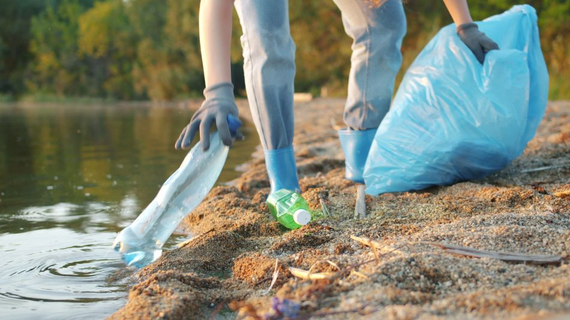
Coastal Clean-up Day
Our largest clean-up. Volunteers combed the sand for plastic and cigarette butts, and recorded what they found.
85 volunteers | 540 kg of waste collected
Education and Workshops
Volunteers share what they know, from why trees matter to composting and recording plantings on the Treeprint map.

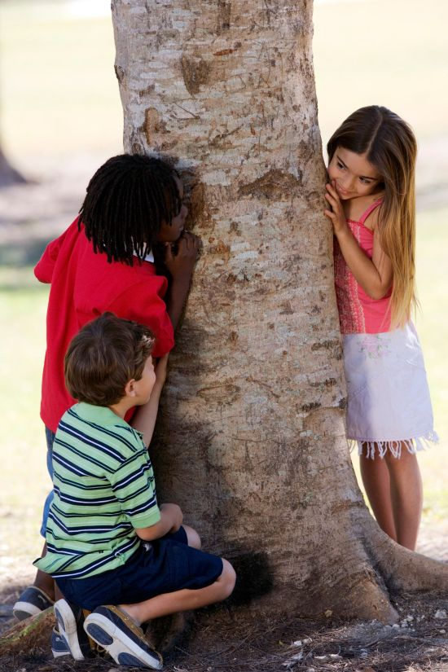
Why Trees Matter: School Talks
Six volunteers visited three classes to explain how trees clean the air, cool our streets and give animals a home.
6 volunteers | 90 learners reached

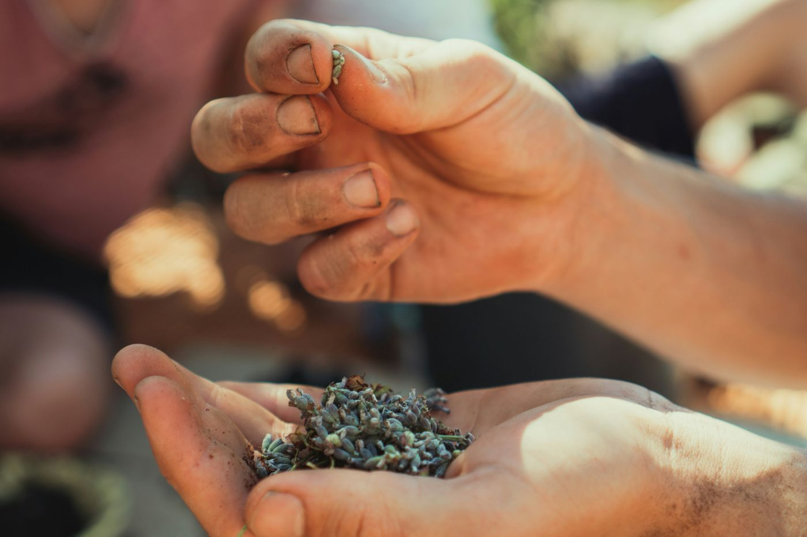
Indigenous Seed Workshop
Participants learned to collect, clean and store seeds from indigenous trees, then took home packets to grow their own.
24 volunteers | 1,200 seeds collected

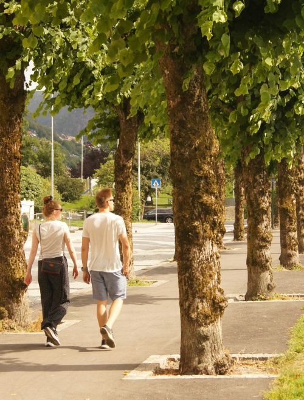
Tree Identification Walk
A guided walk along the trail taught us to recognise trees by their leaves, bark and shape.
30 volunteers | 12 species identified

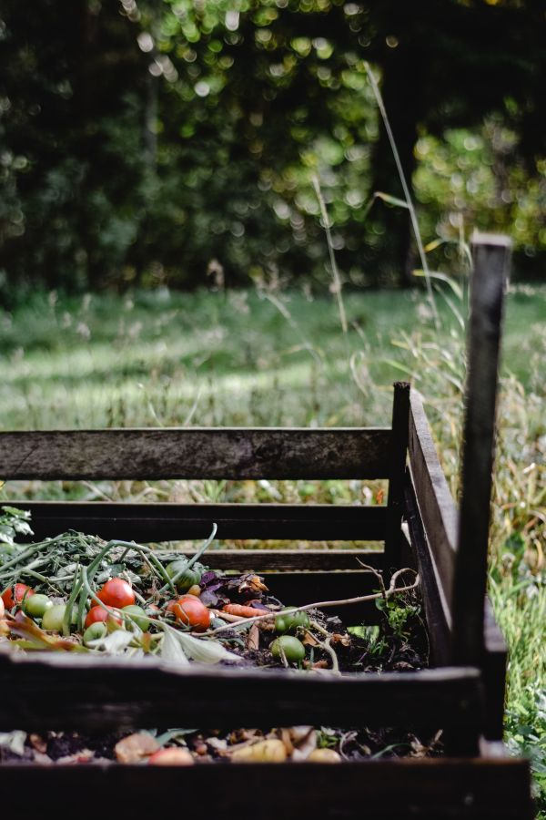
Composting Workshop
Volunteers built four wooden compost bins and learned how kitchen scraps and garden waste become food for new trees.
33 volunteers | 4 compost bins built

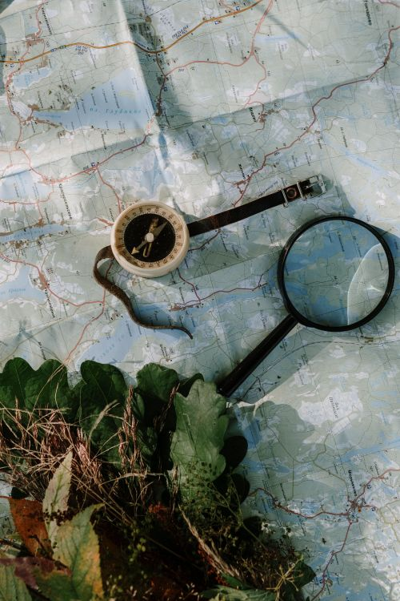
Treeprint Mapping Training
Volunteers practised recording their plantings on the Treeprint tree map from their phones and tablets.
20 volunteers | 86 plantings added to the map
Aftercare and Community
A tree only counts if it survives. Volunteers water, mulch, measure and tag trees, and celebrate the people behind them.

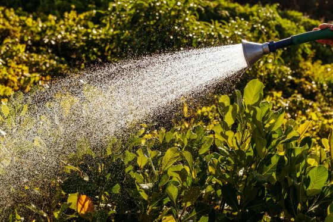
Summer Watering Round
During the hottest weeks of summer, volunteers went from tree to tree with watering cans so that young trees did not dry out.
18 volunteers | 300 saplings watered

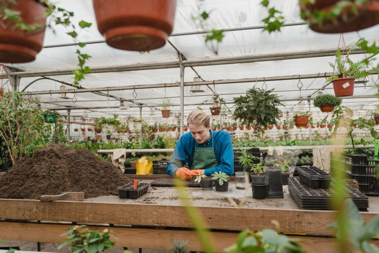
Nursery Potting Day
Seedlings were moved into pots under shade cloth, ready to be planted out at our next planting days.
26 volunteers | 400 seedlings potted

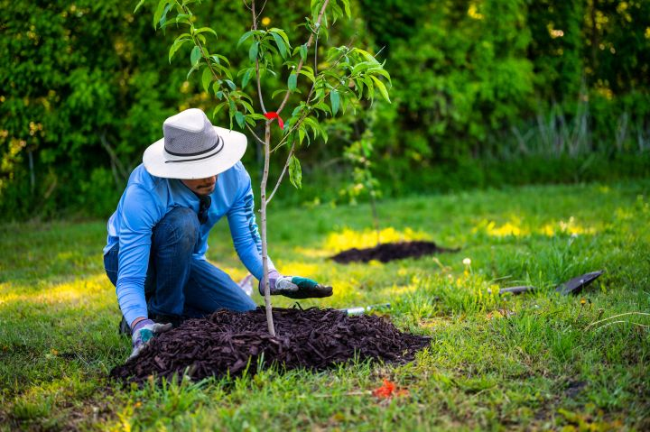
Mulching and Tree Guards
A thick layer of mulch keeps moisture in the soil. Volunteers also fitted guards to protect the trunks.
21 volunteers | 75 trees mulched

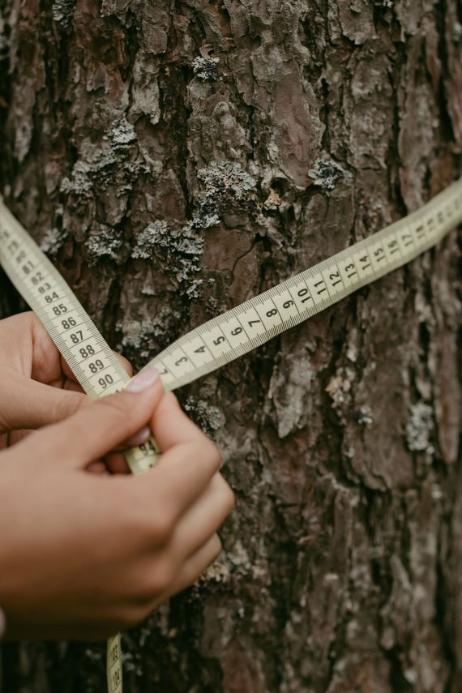
Tree Health Survey
Volunteers measured, photographed and tagged trees planted earlier this year and recorded which ones need extra care.
16 volunteers | 210 trees measured and tagged

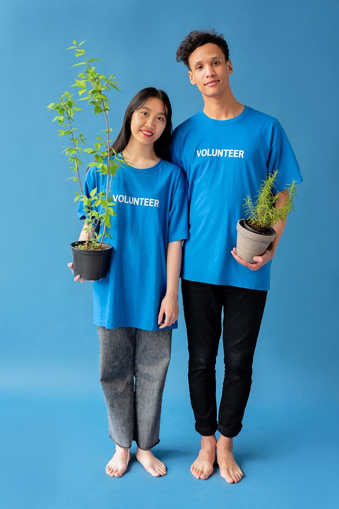
Volunteer Appreciation Day
We thanked our volunteers with a picnic under the bunting and planted one more tree together.
70 volunteers | 1 commemorative tree planted